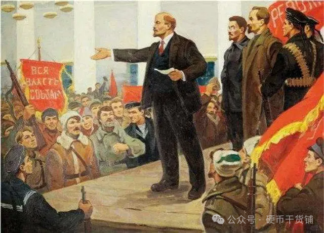
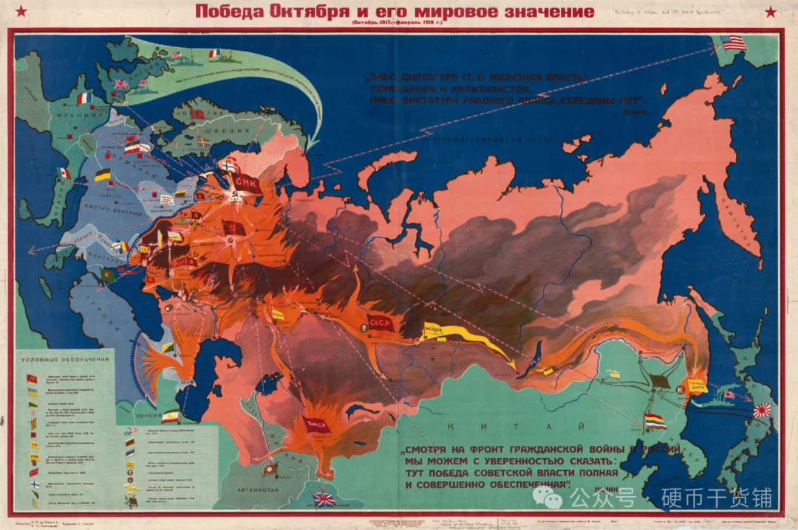
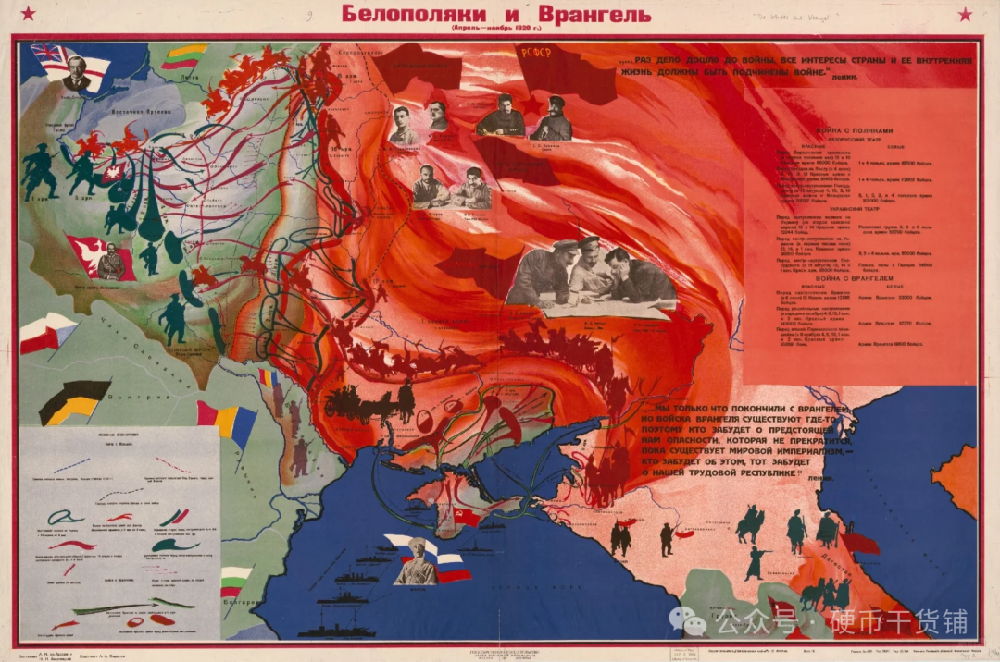
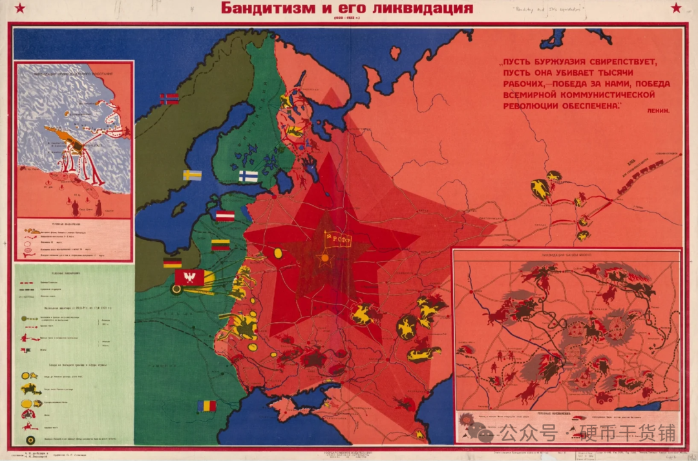
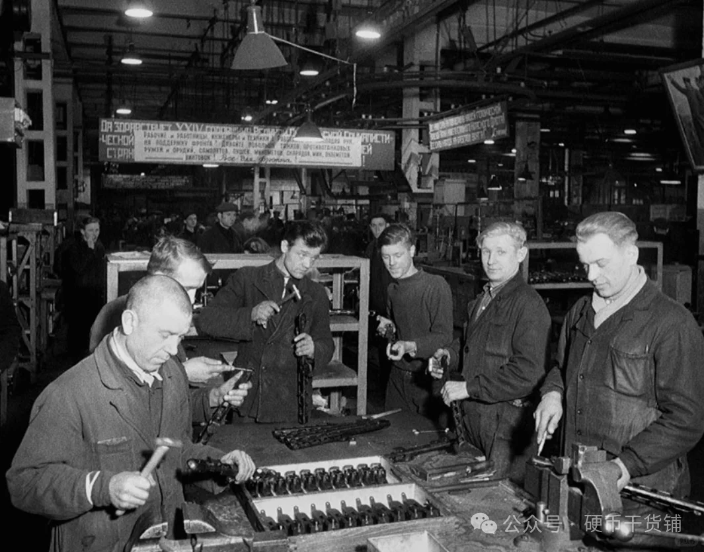
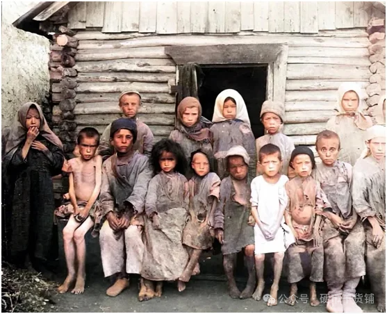

最危险的三年：内战、干涉、饥饿与红色生存
文字与图片版权归各自权利人所有。 查看公众号原文 ↗
1917年11月，十月革命胜利后，苏维埃政权在彼得格勒诞生，世界上第一个社会主义国家，正式登上历史舞台。

但新生的红色政权，从诞生的那一刻起，就陷入了内外交困的绝境之中。国内，反对苏维埃政权的势力纷纷崛起，组建白军，发动叛乱，企图推翻苏维埃政权，恢复旧制度；国外，英、法、美、日等帝国主义国家，害怕苏维埃政权的崛起会威胁到自己的利益，纷纷出兵干涉俄国革命，支持白军叛乱，试图将这个新生的社会主义国家，扼杀在摇篮之中。

从1918年到1920年，整整三年时间，苏联经历了内战、干涉、饥饿的三重折磨，这是苏联历史上最危险、最艰难的三年，也是红色政权最接近覆灭的三年。在这三年里，苏维埃政权面临着灭顶之灾，但凭借着列宁的正确领导，凭借着红军战士的浴血奋战，凭借着广大民众的支持，最终坚守住了红色火种，赢得了生存的机会。首先，我们来看国内的白军叛乱——这是苏维埃政权面临的最直接、最严峻的威胁。白军，是反对苏维埃政权的反革命武装的统称，他们的成分极为复杂，主要包括：被推翻的沙皇贵族、地主阶级、资产阶级，以及反对布尔什维克党的社会革命党人、孟什维克党人，还有一些反动的哥萨克武装。这些人虽然立场不同，但都有一个共同的目标——推翻苏维埃政权，恢复旧制度，因此，他们联合起来，组建了白军，在俄国各地发动叛乱。

白军的势力非常强大，他们得到了国外帝国主义国家的支持，拥有先进的武器装备和充足的物资补给，同时，他们还煽动部分不明真相的农民和士兵，加入到叛乱队伍中来。白军在俄国各地发动叛乱，控制了俄国的大片领土，对苏维埃政权形成了包围之势，彼得格勒、莫斯科等大城市，随时都有可能被白军攻占。除了白军叛乱，苏维埃政权还面临着一个意想不到的威胁——捷克军团的叛乱。捷克军团，原本是第一次世界大战期间，俄国军队中的一支捷克侨民部队，十月革命爆发后，他们希望能够返回自己的国家。苏维埃政权同意了他们的请求，允许他们沿着西伯利亚铁路，前往海参崴，然后乘船返回捷克。但在途中，捷克军团受到了白军和帝国主义国家的煽动，发动了叛乱。捷克军团的士兵训练有素、战斗力极强，他们迅速占领了西伯利亚铁路的大部分路段，控制了俄国的远东地区，切断了苏维埃政权与远东地区的联系，成为了威胁苏维埃政权的一支重要反动力量。国内的白军叛乱、捷克军团叛乱，让苏维埃政权陷入了混乱之中，而国外帝国主义国家的武装干涉，则让这场危机雪上加霜。

十月革命胜利后，英、法、美、日等帝国主义国家，对苏维埃政权充满了恐惧和敌视。他们害怕苏维埃政权的“共产主义思想”会传播到自己的国家，威胁到自己的统治；同时，他们也想趁机瓜分俄国的领土，掠夺俄国的资源，因此，他们纷纷出兵，干涉俄国革命。英国、法国、美国的军队，分别从俄国的北方、西方、南方登陆，占领了俄国的大片领土，支持白军叛乱；日本的军队，则从俄国的远东地区登陆，占领了海参崴等重要城市，企图将俄国的远东地区据为己有。据统计，当时干涉俄国革命的外国军队，总人数超过了20万，他们与白军相互勾结，对苏维埃政权发动了大规模的进攻，苏维埃政权面临着灭顶之灾。为了应对内外危机，保卫新生的苏维埃政权，列宁领导的苏维埃政府，采取了一系列紧急措施：组建红军，加强武装力量的建设，号召广大工人、农民、士兵加入红军，保卫红色政权；同时，推行了一项特殊的政策——战时共产主义政策，集中全国的人力、物力、财力，支持战争，度过危机。战时共产主义政策的核心内容，主要包括三点：一是余粮征集制，苏维埃政府派出工作人员，到农村征集农民的余粮，甚至是部分必需的粮食，用于供应红军和城市居民，确保战争的需要；二是工业国有化，将全国的工厂、矿山、铁路等工业企业，全部收归国有，由苏维埃政府统一管理，集中力量生产武器装备和军用物资；三是普遍义务劳动制，要求所有有劳动能力的人，都必须参加劳动，为战争和国家建设贡献力量，同时，严厉打击投机倒把、囤积居奇的行为，稳定物价。

战时共产主义政策，是在特殊历史条件下，苏维埃政府采取的一项特殊政策。它的推行，在一定程度上集中了全国的人力、物力、财力，支持了战争，为红军击败白军和外国干涉军，保卫新生的苏维埃政权，起到了重要的作用。但与此同时，这项政策也带来了严重的负面影响——余粮征集制的推行，过度剥夺了农民的利益，导致农民的生产积极性大幅下降；工业国有化的推行，虽然集中了力量，但也导致了工业生产的僵化；普遍义务劳动制的推行，也引起了部分民众的不满。而最让苏维埃政权头疼的，是饥饿问题。由于内战和外国干涉的持续，俄国的农业生产遭到了严重的破坏，粮食产量大幅下降；同时，战时共产主义政策的推行，过度征集农民的粮食，导致农村的粮食储备耗尽，城市的粮食短缺问题日益严重。1921年，俄国爆发了大规模的饥荒，饿殍遍野，无数人因为饥饿失去了生命，据统计，这场饥荒，导致俄国的人口减少了数百万。

饥荒的爆发，让苏维埃政权的统治面临着新的危机，部分农民因为饥饿，开始反对苏维埃政权，发动了农民起义，其中，最著名的就是喀琅施塔得起义。喀琅施塔得的 sailors，原本是十月革命的坚定支持者，但由于饥荒和对於战时共产主义政策的不满，他们发动了起义，要求苏维埃政府改善民生、废除战时共产主义政策。面对农民起义和饥荒的双重危机，列宁意识到，战时共产主义政策已经不再适应当时的形势，必须进行调整。但在1920年底，内战和外国干涉，终于迎来了转机——红军在列宁的领导下，经过三年的浴血奋战，先后击败了白军的各个派系，镇压了捷克军团的叛乱，驱逐了外国干涉军，彻底赢得了内战的胜利，保卫了新生的苏维埃政权。这三年，是苏联历史上最艰难、最危险的三年，是内战与干涉交织、饥饿与死亡并存的三年。在这三年里，苏维埃政权面临着灭顶之灾，但凭借着坚定的信念、顽强的意志，凭借着广大民众的支持，最终坚守住了红色火种，赢得了生存的机会。下一期，我们见证苏联正式诞生的全过程：内战结束后，一个“联盟国家”的雏形悄然成型。俄罗斯、乌克兰、白俄罗斯、外高加索，四个苏维埃共和国为何会走到一起？列宁的“民族自决”理念，与苏联的集权体制，又存在着怎样的矛盾与碰撞？